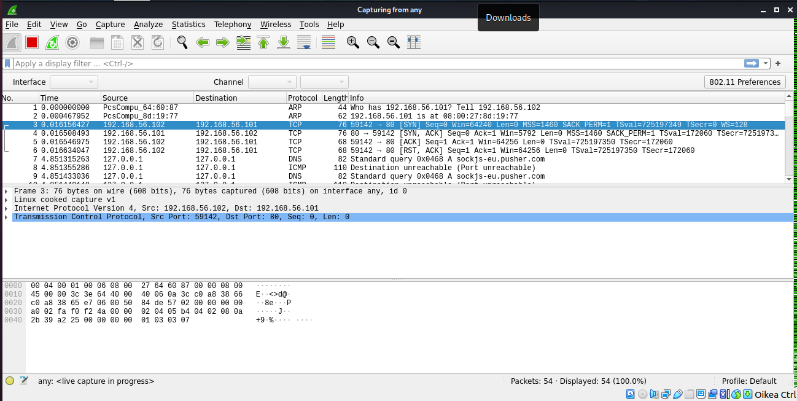
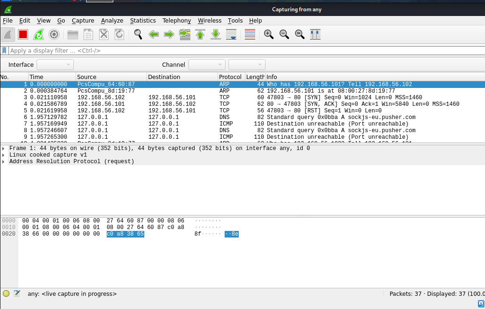
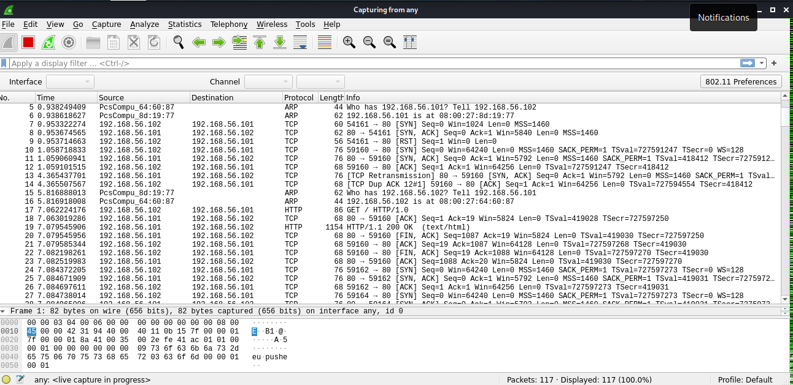
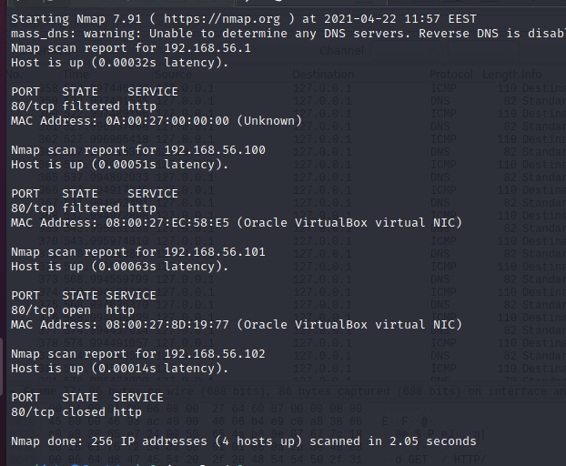
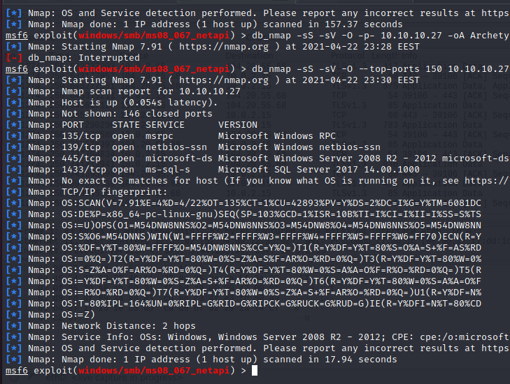

Tunkeutumistestaus -kurssin raportti, osa 4
Tämä on tehtäväraportti Haaga-Helian Tunkeutumistestaus -kurssilta, missä tarkastelemme erilaisten järjestelmien tietoturvallisuutta ja tarkastellaan miten hakkerit näkevät järjestelmän pyrkiessään tunkeutumaan niihin.
Raportin tekijä: Jyrki Aho
Nmapin toimintoja
Luin hieman materiaalia nmapin toiminnasta ja kirjasin itselleni ylös alla olevat parametrit tätä tehtävää ja jatkoa varten.
Nmapin parametrit
| -sL | Skannaa ja muodostaa listan yhteyksistä, ilman että nmap lähettää paketteja palvelimelle. |
|---|---|
| -sS | Tämä parametri vastaa TCP SYN Skannausta, joka kykenee skannaamaan 1000 porttia sekunnissa. Se on myös nopea ja huomaamattomampi, koska se ei koskaan muodosta TCP yhteyttä loppuun saakka. Se myös kerttoo missä tilassa portit ovat. Eli ovatko ne open, closed vai filtered tiloissa. |
| -sT | Oletusarvoinen TCP yhteys skannaus, kun TCP SYN skannaus ei ole vaihtoehto. Tätä vaihtoehtoa käytetään mikäli skannausta suorittavalla henkilöllä ei ole raw packet privledges. |
| -sU | Tämän avulla nmap suorittaa UDP skannauksen. Vaikka TCP on yleisin yhteysmuoto internetissä, niin jotkin palvelut ovat saatavilla UDP muodossa, kuten esimerkiksi DNS, SNMP ja DHCP, jotka ovat kolme yleisintä UDP-palveluja.UDP skannaus on hitaampi ja vaikeampi kuin TCP skannaus, minkä vuoksi jotkut turvallisuusauditoijat eivät testaa näitä portteja. Hakkerit hyödyntävät tätä tietoa pyrkiessään tunkeutumaan järjestelmiin. |
| -oA [filename] | Vie nmapin skannauksen tulokset filename nimiseen tiedostoon |
| -sV | Tämän parametrin avulla kerrotaan nmapille, että halutaan selvittää käytössä olevat versiot. |
| -p [portit] | Tämän parametrin avulla määritellään mitkä portit käydään läpi. Esimerkiksi komento -p- tekee sen, että nmap käy kaikki portit 0-65535 läpi. |
| --top-ports [luku] | Tämän parametrin avulla kerrotaan nmapille, että halutaan käydä läpi top [luku] suosituinta palvelua läpi ja katsoa missä tilassa ne ovat. |
Meinasin aluksi testata nmapia ja wiresharkia Hachtheboxin koneeseen, mutta totesin että liikennettä oli hieman liikaa, jotta saisi varmasti oikeansuuntaisia vastauksia. Tästä syystä irroitin Kalin verkosta ja avasin metasploit2 palvelimen testiserveriksi. Suoritin aluksi komennon sudo nmap -sT -p80 192.168.56.101, jolloin nmap testaa ainoastaan porttia 80 IP-osoitteessa 182,168.56.101. Tällöin Wireshark kaappaa seuraavanlaisen liikenteen.
Jos oikein tulkitsen tätä liikennettä, niin nmap lähettää normaalin paketin kyseiseen osoitteeseen, minkä jälkeen nmap jäi odottamaan TCP yhteyden muodostumista.
Kokeilen tämän jälkeen TCP SYN skannausta kohti metasploit2:sta. Tällöin suoritan komennon sudo nmap -sT -p80 192.168.56.101. Tällöin saadaan napattua seuraavanlainen liikenne.
Tällöin dataa kulkee hieman vähemmän kuin tavallisella TCP skannauksella, mikä johtuu ilmeisesti siitä ettei nmap jää odottamaan TCP yhteyden muodostamista.
Suoritin ping sweepin paramertilla -sn, mutta jostakin syystä tämä komento ei näyttänyt toimivan. Tai ainakaan se ei jättänyt Wiresharkkiin merkittävää jälkeä. Näin vain että ohjelma suoritti whois toiminnon kyseiselle osoitteelle ja lopetti sen siihen. Kokeilin tämän jälkeen tuota -Pn parametria ja totesin sen täyttävän täysin Wiresharkin. Ymmärrän hyvin, miksi tätä hakua ei kannata käyttää.
Suoritin tämän jälkeen version selvittämisen portista 80 komennolla sudo nmap -sV -p80 192.168.56.101. Yllätyin hieman kuinka monta komentoa nmapin piti suorittaa, jotta se sai selvitettyä mikä palvelin versio palvelimella on käytössä kyseisestä palvelusta. Ilmeisesti OK viestit, virheviestit ja toimivat hakukäskyt voivat paljastaa, mikä palvlelin ja sen versio on käytössä kyseisellä palvelimella.
Porttien valintaa kokeilinkin jo aikaisemman testin aikana, kun halusin rajata Websharkin tuottamaa dataa yksittäiseksi esimerkiksi, jotta sen tulkitseminen olisi helpompaa. Kokeilin verkkomaskin toimintaa suljetussa virtuaaliverkossa komennolla sudo nmap -sS -p80 192.168.56.0/24, jolloin sain seuraavanlaiset tuloksen.
Tutkin asiaa vähän tarkemmin ja sain selvitettyä, että osoite 100 vastaa virtuaaliympäristön IP-osoitetta, 101 vastaa metasploittia ja 102 on ilmeisesti Kali-käyttöjärjestelmä. Mitään muita koneita ei ole kytkettynä virtuaaliverkossa. Kokeilin useampaa temppua pyrkiessäni selvittämään osoitteen 192.168.56.102 arvoitusta, mutta koska kaikki portit olivat kiinni, niin olettaisin kyseessä olevan Kali käyttöjärjestelmä. Nmap ei tietenkään voi tunnistaa käyttöjärjestelmää, mikäli mikään porteista ei vastaa.
Tyhjäsin Wiresharkin kokonaan ja koitin nmapata kyseisen kohteen. Wiresharkin viestiliikenne selvästi kohdistui Kaliin itseensä ja viestiliikenne näkyi selvästi kyseisessä ohjelmassa. Löysin Srinivasin artikkelin, missä esiteltiin alkeet lokien analysointia varten mahdollisen hyökkäyksen sattuessa. Tämän perusteella ajoin Kalissa komennot service apache2 start ja service mysql start. Kumpikin komento tarvitsi rootin salasanaa käynnistyäkseen. Kokeilin tämän jälkeen nmapata osoiteen 192.168.56.102. Tällöin nmap pystyi havaitsemaan, että Apache serveri oli päällä portin 80 takana. Samalla nmaps pystyi myös selvittämään mikä Linux Kalissa on käytössä. Se ei kuitenkaan kyennyt selvittämään mikä Linux distro oli käytössä tämän tiedon perusteella. Tein tämän jälkeen seuraavanlaisen html sivun tutkiakseni, kuinka logitiedot tallentuvat.
<!DOCTYPE HTML>
<html>
<head>
<title>Testi</title>
<meta charset="UTF-8" />
</head>
<body>
<div>
<h1>Testi</h1>
<form action="index2.html">
<input type="text" name="textfield_query" />
<input type="submit" value="Lähetä" />
</form>
</div>
</body>
</html>
Heitin sinne muutaman komennon, jonka jälkeen tutkin /var/log/apache2/access.log tiedostoa cat ja grep komentojen avulla. Tämän jälkeen kokeilin ajaa nmap komennon, minkä jälkeen tarkastelin miten se näkyy näissä lokitiedoissa. Totesin että -sS ei jätä lokiin merkintöjä, mutta versiohausta -sV jää merkintä lokiin.
Lähteet
Gordon L., 2021. Chapter 1. Getting Started with Nmap. Luettavissa: https://nmap.org/book/nmap-overview-and-demos.html. Luettu: 22.4.2021.
Gordon L., 2021. Chapter 15. Nmap Reference Guide. Luettavissa: https://nmap.org/book/man.html. Luettu: 22.4.2021.
Karvinen, T., 2021. Penetration Testing Course 2021 Spring. Luettavissa: https://terokarvinen.com/2021/hakkerointi-kurssi-tunkeutumistestaus-ict4tn027-3005/. Luettu: 22.4.2021.
Srinivas, 2018. Log Analysis for Web Attacks: A Beginner’s Guide. Luettavissa: https://resources.infosecinstitute.com/topic/log-analysis-web-attacks-beginners-guide/. Luettu: 22.4.2021.
UDP skannaus
Kuten jo aikaisemmin mainitsin, niin UDP:n kolme yleisintä palveluja ovat DNS, SNMP ja DHCP. UDP skannaus on vaikeaa, koska se on ainoastaan yksisuuntaista. Järjestelmälle on lähetettävä tietynlainen kutsu, joka aktivoi UDP -lähetyksen, minkä jälkeen on kyettävä analysoimaan tämän datan perusteella mikä palvelu ja versio toisessa päässä on. Kun tällaista UDP porttia vastaan lähtee hyökkäämään, niin se ei palauta sellaista tietoa, minkä perusteella hyökkääjä voisi tietää kuinka lähellä murtoa hän on. En löytänyt materiaalista selitystä sille, miksi UDP skannauksen yhteydessä pitäisi käyttää --reason flagia. Ilmeisesti tarkoituksena on havainnoida, miksi mikäkin portti on kiinni ja hyökkääjä voi siten varmistaa silmäillen, onko jokin portti oikeasti kiinni vai voiko sen takana lymytä UDP palvelin.
Lähteet
Gordon L., 2021. Chapter 1. Getting Started with Nmap. Luettavissa: https://nmap.org/book/nmap-overview-and-demos.html. Luettu: 22.4.2021.
Gordon L., 2021. Chapter 15. Nmap Reference Guide. Luettavissa: https://nmap.org/book/man.html. Luettu: 22.4.2021.
Hack the Box
Sammutin Metsploit2:sen ja yhdistin Kalin takaisin internettiin. Kirjauduin Hack the Boxin järjestelmään ja totesin heidän tehneen joitakin pieniä muutoksia järjestelmiinsä. Järjestelmä ehdotti, että tutustuisin Hack the Boxin järjestelmään ja kokeilisin helpompia kohteita. Valitsin sieltä ensimmäiseksi kohteeksi Archetype koneen.

Tarkistin nmapin avulla kyseisen koneen portit. Portti 135 viittaa Exchange palvelimeen. Tälle löytyy joitakin bufferin ylivuotohyökkäyksiä. Porttia 139 käytetään tiedostojen ja tulostimien jakoon. Tämä portti saattaa vuotaa tietoja ja siihen on ehkä mahdollista hyökätä sopivasti muodostetulla kysymyksellä. Portti 445 on Lync Serverin portti ja se pitäisi ehdottomasti olla palomuurilla suojattu. Näiden kolmen portin aukiolo viittaisi kriittisen RPC haavoittuvuuden olemassaoloon. Nämä portit saisivat olla auki ainoastaan erittäin suojatun palomuurin sisällä ja ne eivät saisi näkyä verkoon.
Totesin etten oikein vielä mahdollisesti hallitse metasploittia, kun koitin mennä sen avulla sisälle. Löysin kuitenkin Konradin ratkaisut netissä, missä hän tarkasteli kyseistä haavoittuvuutta. Hänen sivuiltaan löysin myös mielenkiintoisen linkin https://tools.kali.org/information-gathering/smbmap, joka johtaa sivustolle, missä esitellään Kaliin liittyviä työkaluja. Kondradin käyttämien ohjelmien avulla sain poimittua prod.dtsConfig, joka sisälsi jonkinlaisen salasanan. Ilmeisesti tämä backup tiedosto on jäännyt kehitysvaiheessa lojumaan sinne. Siellä olevan salasanan aulla kuitenkin voi yrittää hyökätä järjestelmän kimppuun. Tässä kohtaa en oikein osannut seurata Konradin ajatuksia, mutta olen tyytyväinen että löysin sivuston, missä voi käydä tarkastelemassa Kalissa olevia tai Kaliin asennettavia ohjelmia. Kokeilin paria haavoittuvuustyökalua ajan kuluksi, mutta ne eivät tuottaneet tulosta.
Lähteet
Konrad, 2020.Hack The Box “Archetype” Writeup. Luettavissa: https://secinject.wordpress.com/2020/10/20/hack-the-box-archetype-writeup/. Luettu: 23.4.2021.
Speed Guide.net, 2021. Port 135 Details. Luettavissa: https://www.speedguide.net/port.php?port=135. Luettu: 23.4.2021.
Speed Guide.net, 2021. Port 139 Details. Luettavissa: https://www.speedguide.net/port.php?port=139. Luettu: 23.4.2021.
Speed Guide.net, 2021. Port 445 Details. Luettavissa: https://www.speedguide.net/port.php?port=445. Luettu: 23.4.2021.